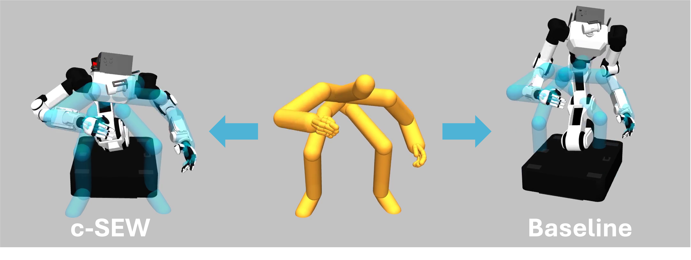
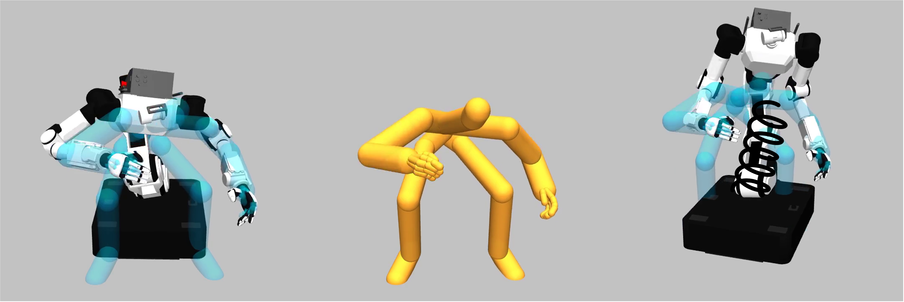
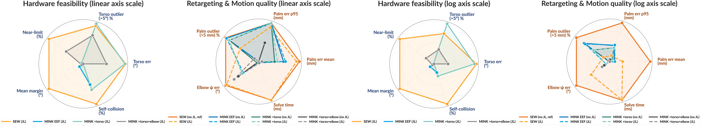

Geometric Whole-Body Retargeting Enables Policy Learning from Offline Human Demonstrations
Mobile whole-body manipulation is a promising application for home robots, but learning such behaviors remains challenging due to the large action space and the high cost of collecting whole-body robot demonstrations. While recent humanoid teleoperation systems enable such data collection, they are expensive, space-intensive, and often unnatural for human operators. Sensorized human data offers the potential for a scalable and diverse source of manipulation data, but transferring behaviors from humans to robots requires overcoming embodiment and action mismatches.
To address this, we propose WARP (Whole-body-Aware Retargeting with task Priority), a geometry-based retargeting method that explicitly models the embodiment differences between humans and robots to produce precise and unique solutions. These properties allow WARP to retarget human data fully offline, producing human-like robot actions that serve as accurate, learnable training data and enable policy learning to scale directly from human demonstrations. We validate WARP by replaying retargeted human trajectories on a real robot and by building a framework that learns whole-body mobile manipulation from offline human data alone.
To our knowledge, WARP is the first method to demonstrate whole-body mobile manipulation replay and direct policy learning from actions retargeted purely from offline human demonstrations.
Retargeting—the mapping from human motion to robot motion—is the central interface between scalable human data and robot policy learning. For whole-body mobile manipulation, prior work either uses online retargeting for teleoperation (which requires hardware, instrumented space, and continuous operator effort) or offline retargeting that reduces each demonstration to an end-effector trajectory (which discards the torso, elbow, and base information humans implicitly optimize).
To learn from offline human data, a whole-body retargeter must satisfy two properties that prior work largely overlooks:
Together, precision and uniqueness make the retargeted data both replayable for verification and learnable as a single-mode supervisory signal.
Existing whole-body retargeters (e.g., GMR built on MINK) frame retargeting as Jacobian-based velocity optimization: \[ \dot{q}^\ast = \arg\min_{\dot{q}}\; \lVert J\dot{q} - \dot{T}^\ast \rVert^2 + \lambda\, \lVert \dot{q} - \dot{q}_{\text{sec}} \rVert^2. \] This conflates cross-embodiment skeleton matching with joint-angle IK and creates three problems: (1) Non-uniqueness — iterative descent commits to whichever branch of the null-space is nearest the seed; different seeds yield disjoint configurations. (2) Imprecision — the weight \(\lambda\) couples end-effector accuracy to pose naturalness; either tracking or whole-body imitation suffers. (3) Calibration sensitivity — misidentified robot keypoints or non-rescaled human keypoints propagate systematic errors through every timestep.

SEW (ours) vs. MINK. On identical human input, optimization-based MINK trades off end-effector accuracy against pose naturalness and produces inconsistent solutions across initializations; the SEW-based formulation yields a single, exact closed-form solution.
WARP is a full-stack offline retargeting pipeline designed to deliver both precision and uniqueness. At its core is c-SEW, a closed-form geometric solver that casts retargeting in the Shoulder–Elbow–Wrist (SEW) representation—an embodiment-agnostic encoding shared by humans and humanoids—and augments it with an analytical end-effector constraint. Around c-SEW we add a VLM-driven task-priority switcher, a spring–damper lower-body controller, and a hierarchy-masked flow policy that consumes the retargeted data.

Figure: WARP pipeline. A cross-embodiment offset aligns the human and robot skeletons; c-SEW recovers a unique, exactly EEF-matched arm configuration in closed form; a task-priority switcher selects the active retargeting target per task phase; a lazy lower-body controller produces smooth mobile-base motion.
The SEW representation identifies shoulder, elbow, and wrist joint groups in humanoid arms whose geometry mirrors human skeleton counterparts. Aligning limb directions via the Subproblem 1/2 chain admits at most one solution per spherical-shoulder arm, making the joint configuration provably unique. However, alignment by direction alone is blind to link length, so a steady-state palm error persists whenever robot and human segments differ.
c-SEW fixes this by adding two closed-form steps:
The corrected skeleton is then solved by Subproblem 1/2 of SEW-Mimic to recover joint angles in closed form. The result is: (i) a unique solution for any non-degenerate arm pose, (ii) exact palm-position matching by construction, (iii) whole-body orientation similarity preserved via the SEW elbow angle \(\psi\), and (iv) microsecond closed-form execution with no per-robot rescaling or calibration.
Unlike end-effector-only pipelines, WARP supports multiple body parts as task-priority targets. We cast task-space selection as classification over a predefined set of body-part classes, with a vision–language model selecting the active target per task phase. During offline retargeting, we switch goals according to the VLM labels and linearly blend adjacent phases in robot joint space and base SE(2) position, producing smooth transitions across task stages.
For mobile manipulation we decouple base motion from upper-body tracking via a spring–damper controller that produces smooth mobile-base trajectories without disturbing upper-body alignment. The base lazily follows the human's lower-body anchor, stabilizing reaching tasks and providing reach extension only when needed.

Figure: Spring–damper lower-body controller. The base follows a virtual coupling to the human anchor, decoupling locomotion from upper-body tracking accuracy.
Whole-body mobile manipulation has a natural causal structure: proximal, high-inertia body parts (base, torso) define the reachable workspace and support, while distal parts (arms, hands) resolve contact-rich interaction. We use this as an inductive bias inside a flow-matching action head. With the action chunk \[ \mathbf{a}_{1:H} = [\mathbf{a}^{b}, \mathbf{a}^{\tau}, \mathbf{a}^{r}, \mathbf{a}^{h}]_{1:H} \] for base, torso, arm, and hand, we impose the factorization \[ p(\mathbf{a}^{b}\mid \mathbf{o})\, p(\mathbf{a}^{\tau}\mid \mathbf{o},\mathbf{a}^{b})\, p(\mathbf{a}^{r}\mid \mathbf{o},\mathbf{a}^{b},\mathbf{a}^{\tau})\, p(\mathbf{a}^{h}\mid \mathbf{o},\mathbf{a}^{b},\mathbf{a}^{\tau},\mathbf{a}^{r}). \] We instantiate this via a block-causal attention mask under the ordering \(b \preceq \tau \preceq r \preceq h\) inside a single flow-matching update, preserving inference cost while discouraging the model from explaining proximal motion via distal features.
We test three hypotheses:

Retargeting diagnostics. Left to right: hardware feasibility (linear and log scale) and retargeting / motion quality (linear and log scale). WARP matches or surpasses SEW-Mimic on tracking and speed while substantially improving over MINK variants on smoothness and consistency, and over EEF-only baselines on whole-body keypoint tracking. HOMIE and GMR trail on speed by 1–3 orders of magnitude.

Pick up Laundry. An identical HPT-vanilla policy is trained on three versions of the same DexMimicGen trajectories that differ only in the retargeter used (MINK, EEF-only WARP, full WARP). Holding the policy, hyperparameters, and data scale fixed isolates the effect of retargeting quality on learnability.

Cross-embodiment. WARP applies across multiple humanoid embodiments without per-robot rescaling. We report replay and policy success rates on three DexMimicGen tasks (can_sort, pouring, coffee).
| Method | can_sort | pouring | coffee | mean | ||||
|---|---|---|---|---|---|---|---|---|
| replay | policy | replay | policy | replay | policy | replay | policy | |
| MINK | — | 94% | — | 74% | — | 8% | — | 59% |
| WARP (ours) | — | 100% | — | 78% | — | 34% | — | 71% |
Table: Replay and policy success rates (%) on DexMimicGen tasks by retargeting method.
Limitation: WARP is a kinematic, quasi-static retargeter; it does not currently model dynamic locomotion or contact-rich loco-manipulation. The task-priority switcher relies on a VLM labeller whose error mode propagates into the priority schedule.
Future work: We hope to extend WARP toward dynamic whole-body skills, broader embodiment coverage, and tighter integration between the geometric solver and learned residual controllers—moving toward scalable mobile manipulation supervised entirely by offline human data.
@inproceedings{warp2026anonymous,
title = {WARP: Geometric Whole-Body Retargeting Enables Policy Learning from Offline Human Demonstrations},
author = {Anonymous Authors},
booktitle = {Conference on Robot Learning (CoRL)},
year = {2026},
note = {Under review}
}